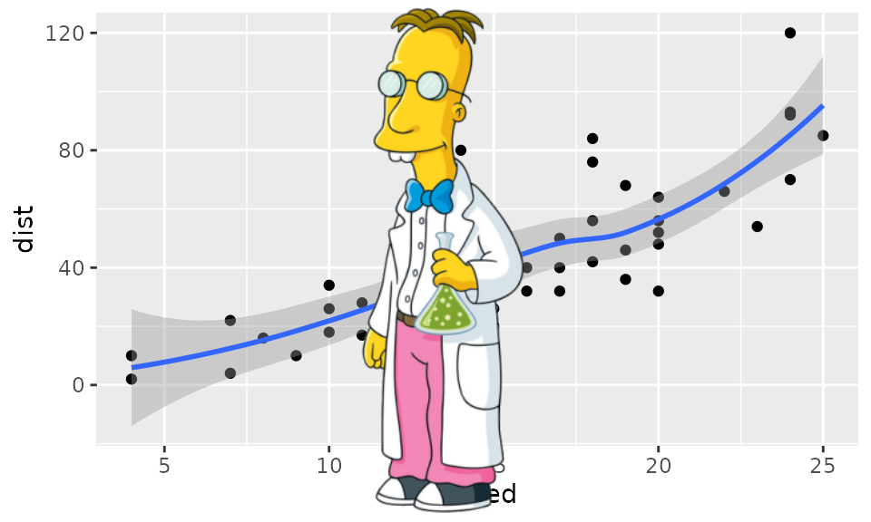

The magick package provide a modern and simple toolkit for image processing in R. It wraps the ImageMagick STL which is the most comprehensive open-source image processing library available today.
The ImageMagick library has an overwhelming amount of functionality. Magick exposes a decent subset of it, but it is impossible to document everything in detail. This article introduces some basic concepts and examples to get started.
Installing magick
On Windows or macOS the package is most easily installed via CRAN.
install.packages("magick")The binary CRAN packages work out of the box and have most important features enabled. Use magick_config to see which features and formats are supported by your version of ImageMagick.
## Linking to ImageMagick 6.9.11.60
## Enabled features: fontconfig, freetype, fftw, heic, lcms, pango, webp, x11
## Disabled features: cairo, ghostscript, raw, rsvg## Using 4 threads
str(magick::magick_config())## List of 24
## $ version :Class 'numeric_version' hidden list of 1
## ..$ : int [1:4] 6 9 11 60
## $ modules : logi TRUE
## $ cairo : logi FALSE
## $ fontconfig : logi TRUE
## $ freetype : logi TRUE
## $ fftw : logi TRUE
## $ ghostscript : logi FALSE
## $ heic : logi TRUE
## $ jpeg : logi TRUE
## $ lcms : logi TRUE
## $ libopenjp2 : logi TRUE
## $ lzma : logi TRUE
## $ pangocairo : logi TRUE
## $ pango : logi TRUE
## $ png : logi TRUE
## $ raw : logi FALSE
## $ rsvg : logi FALSE
## $ tiff : logi TRUE
## $ webp : logi TRUE
## $ wmf : logi TRUE
## $ x11 : logi TRUE
## $ xml : logi TRUE
## $ zero-configuration: logi FALSE
## $ threads : int 4Build from source
On Linux you need to install the ImageMagick++ library: on Debian/Ubuntu this is called libmagick++-dev:
sudo apt-get install libmagick++-devOn Fedora or CentOS/RHEL we need ImageMagick-c++-devel:
sudo yum install ImageMagick-c++-develTo install from source on macOS you need either imagemagick@6 or imagemagick from homebrew.
brew install imagemagick@6Unfortunately the current imagemagick@6 configuration on homebrew disables a bunch of features, including librsvg and fontconfig. Therefore the quality of fonts and svg rendering might be suboptimal. The is not a problem for the CRAN binary package.
Image IO
What makes magick so magical is that it automatically converts and renders all common image formats. ImageMagick supports dozens of formats and automatically detects the type. Use magick::magick_config() to list the formats that your version of ImageMagick supports.
Read and write
Images can be read directly from a file path, URL, or raw vector with image data with image_read. The image_info function shows some meta data about the image, similar to the imagemagick identify command line utility.
library(magick)
tiger <- image_read_svg('http://jeroen.github.io/images/tiger.svg', width = 350)
print(tiger)## format width height colorspace matte filesize density
## 1 PNG 350 350 sRGB TRUE 0 72x72
We use image_write to export an image in any format to a file on disk, or in memory if path = NULL.
# Render svg to png bitmap
image_write(tiger, path = "tiger.png", format = "png")If path is a filename, image_write returns path on success such that the result can be piped into function taking a file path.
Converting formats
Magick keeps the image in memory in its original format. Specify the format parameter image_write to convert to another format. You can also internally convert the image to another format earlier, before applying transformations. This can be useful if your original format is lossy.
tiger_png <- image_convert(tiger, "png")
image_info(tiger_png)## format width height colorspace matte filesize density
## 1 PNG 350 350 sRGB TRUE 0 72x72Note that size is currently 0 because ImageMagick is lazy (in the good sense) and does not render until it has to.
Preview
IDE’s with a built-in web browser (such as RStudio) automatically display magick images in the viewer. This results in a neat interactive image editing environment.

Alternatively, on Linux you can use image_display to preview the image in an X11 window. Finally image_browse opens the image in your system’s default application for a given type.
# X11 only
image_display(tiger)
# System dependent
image_browse(tiger)Another method is converting the image to a raster object and plot it on R’s graphics display. However this is very slow and only useful in combination with other plotting functionality. See #raster below.
Transformations
The best way to get a sense of available transformations is walk through the examples in the ?transformations help page in RStudio. Below a few examples to get a sense of what is possible.
Cut and edit
Several of the transformation functions take an geometry parameter which requires a special syntax of the form AxB+C+D where each element is optional. Some examples:
-
image_crop(image, "100x150+50"): crop outwidth:100pxandheight:150pxstarting+50pxfrom the left -
image_scale(image, "200"): resize proportionally to width:200px -
image_scale(image, "x200"): resize proportionally to height:200px -
image_fill(image, "blue", "+100+200"): flood fill with blue starting at the point atx:100, y:200 -
image_border(frink, "red", "20x10"): adds a border of 20px left+right and 10px top+bottom
The full syntax is specified in the Magick::Geometry documentation.
# Example image
frink <- image_read("https://jeroen.github.io/images/frink.png")
print(frink)## format width height colorspace matte filesize density
## 1 PNG 220 445 sRGB TRUE 73494 72x72
# Add 20px left/right and 10px top/bottom
image_border(image_background(frink, "hotpink"), "#000080", "20x10")
# Trim margins
image_trim(frink)
# Passport pica
image_crop(frink, "100x150+50")
# Resize
image_scale(frink, "300") # width: 300px
image_scale(frink, "x300") # height: 300px
# Rotate or mirror
image_rotate(frink, 45)
image_flip(frink)
image_flop(frink)
# Brightness, Saturation, Hue
image_modulate(frink, brightness = 80, saturation = 120, hue = 90)
# Paint the shirt orange
image_fill(frink, "orange", point = "+100+200", fuzz = 20)
With image_fill we can flood fill starting at pixel point. The fuzz parameter allows for the fill to cross for adjacent pixels with similarish colors. Its value must be between 0 and 256^2 specifying the max geometric distance between colors to be considered equal. Here we give professor frink an orange shirt for the World Cup.
Filters and effects
ImageMagick also has a bunch of standard effects that are worth checking out.
# Add randomness
image_blur(frink, 10, 5)
image_noise(frink)
# Silly filters
image_charcoal(frink)
image_oilpaint(frink)
image_negate(frink)
Kernel convolution
The image_convolve() function applies a kernel over the image. Kernel convolution means that each pixel value is recalculated using the weighted neighborhood sum defined in the kernel matrix. For example lets look at this simple kernel:
kern <- matrix(0, ncol = 3, nrow = 3)
kern[1, 2] <- 0.25
kern[2, c(1, 3)] <- 0.25
kern[3, 2] <- 0.25
kern## [,1] [,2] [,3]
## [1,] 0.00 0.25 0.00
## [2,] 0.25 0.00 0.25
## [3,] 0.00 0.25 0.00This kernel changes each pixel to the mean of its horizontal and vertical neighboring pixels, which results in a slight blurring effect in the right-hand image below:
img <- image_resize(logo, "300x300")
img_blurred <- image_convolve(img, kern)
image_append(c(img, img_blurred))
Or use any of the standard kernels
img |> image_convolve('Sobel') |> image_negate()
img |> image_convolve('DoG:0,0,2') |> image_negate()
Text annotation
Finally it can be useful to print some text on top of images:
# Add some text
image_annotate(frink, "I like R!", size = 70, gravity = "southwest", color = "green")
# Customize text
image_annotate(frink, "CONFIDENTIAL", size = 30, color = "red", boxcolor = "pink",
degrees = 60, location = "+50+100")
# Fonts may require ImageMagick has fontconfig
image_annotate(frink, "The quick brown fox", font = 'Times', size = 30)
Fonts that are supported on most platforms include "sans", "mono", "serif", "Times", "Helvetica", "Trebuchet", "Georgia", "Palatino"or "Comic Sans".
Combining with pipes
Each of the image transformation functions returns a modified copy of the original image. It does not affect the original image.
frink <- image_read("https://jeroen.github.io/images/frink.png")
frink2 <- image_scale(frink, "100")
image_info(frink)## format width height colorspace matte filesize density
## 1 PNG 220 445 sRGB TRUE 73494 72x72
image_info(frink2)## format width height colorspace matte filesize density
## 1 PNG 100 202 sRGB TRUE 0 72x72Hence to combine transformations you need to chain them:
test <- image_rotate(frink, 90)
test <- image_background(test, "blue", flatten = TRUE)
test <- image_border(test, "red", "10x10")
test <- image_annotate(test, "This is how we combine transformations", color = "white", size = 30)
print(test)## format width height colorspace matte filesize density
## 1 PNG 465 240 sRGB TRUE 0 72x72
Using pipe syntax makes it a bit more readable
image_read("https://jeroen.github.io/images/frink.png") |>
image_rotate(270) |>
image_background("blue", flatten = TRUE) |>
image_border("red", "10x10") |>
image_annotate("The same thing with pipes", color = "white", size = 30)
Image Vectors
The examples above concern single images. However all functions in magick have been vectorized to support working with layers, compositions or animation.
The standard base methods [ [[, c() and length() are used to manipulate vectors of images which can then be treated as layers or frames.
# Download earth gif and make it a bit smaller for vignette
earth <- image_read("https://jeroen.github.io/images/earth.gif") |>
image_scale("200x") |>
image_quantize(128)
length(earth)## [1] 44
earth
head(image_info(earth))## format width height colorspace matte filesize density
## 1 GIF 200 200 RGB FALSE 0 72x72
## 2 GIF 200 200 RGB TRUE 0 72x72
## 3 GIF 200 200 RGB TRUE 0 72x72
## 4 GIF 200 200 RGB TRUE 0 72x72
## 5 GIF 200 200 RGB TRUE 0 72x72
## 6 GIF 200 200 RGB TRUE 0 72x72
rev(earth) |>
image_flip() |>
image_annotate("meanwhile in Australia", size = 20, color = "white")
Layers
We can stack layers on top of each other as we would in Photoshop:
bigdata <- image_read('https://jeroen.github.io/images/bigdata.jpg')
frink <- image_read("https://jeroen.github.io/images/frink.png")
logo <- image_read("https://jeroen.github.io/images/Rlogo.png")
img <- c(bigdata, logo, frink)
img <- image_scale(img, "300x300")
image_info(img)## format width height colorspace matte filesize density
## 1 JPEG 300 225 sRGB FALSE 0 72x72
## 2 PNG 300 232 sRGB TRUE 0 72x72
## 3 PNG 148 300 sRGB TRUE 0 72x72A mosaic prints images on top of one another, expanding the output canvas such that that everything fits:
image_mosaic(img)
Flattening combines the layers into a single image which has the size of the first image:
image_flatten(img)
Flattening and mosaic allow for specifying alternative composite operators:
image_flatten(img, 'Add')
image_flatten(img, 'Modulate')
image_flatten(img, 'Minus')
Combining
Appending means simply putting the frames next to each other:
image_append(image_scale(img, "x200"))
Use stack = TRUE to position them on top of each other:
image_append(image_scale(img, "100"), stack = TRUE)
Composing allows for combining two images on a specific position:
bigdatafrink <- image_scale(image_rotate(image_background(frink, "none"), 300), "x200")
image_composite(image_scale(bigdata, "x400"), bigdatafrink, offset = "+180+100")
Pages
When reading a PDF document, each page becomes an element of the vector. Note that PDF gets rendered while reading so you need to specify the density immediately.
manual <- image_read_pdf('https://cloud.r-project.org/web/packages/magick/magick.pdf', density = 72)
image_info(manual)## format width height colorspace matte filesize density
## 1 PNG 612 792 sRGB TRUE 0 72x72
## 2 PNG 612 792 sRGB TRUE 0 72x72
## 3 PNG 612 792 sRGB TRUE 0 72x72
## 4 PNG 612 792 sRGB TRUE 0 72x72
## 5 PNG 612 792 sRGB TRUE 0 72x72
## 6 PNG 612 792 sRGB TRUE 0 72x72
## 7 PNG 612 792 sRGB TRUE 0 72x72
## 8 PNG 612 792 sRGB TRUE 0 72x72
## 9 PNG 612 792 sRGB TRUE 0 72x72
## 10 PNG 612 792 sRGB TRUE 0 72x72
## 11 PNG 612 792 sRGB TRUE 0 72x72
## 12 PNG 612 792 sRGB TRUE 0 72x72
## 13 PNG 612 792 sRGB TRUE 0 72x72
## 14 PNG 612 792 sRGB TRUE 0 72x72
## 15 PNG 612 792 sRGB TRUE 0 72x72
## 16 PNG 612 792 sRGB TRUE 0 72x72
## 17 PNG 612 792 sRGB TRUE 0 72x72
## 18 PNG 612 792 sRGB TRUE 0 72x72
## 19 PNG 612 792 sRGB TRUE 0 72x72
## 20 PNG 612 792 sRGB TRUE 0 72x72
## 21 PNG 612 792 sRGB TRUE 0 72x72
## 22 PNG 612 792 sRGB TRUE 0 72x72
## 23 PNG 612 792 sRGB TRUE 0 72x72
## 24 PNG 612 792 sRGB TRUE 0 72x72
## 25 PNG 612 792 sRGB TRUE 0 72x72
## 26 PNG 612 792 sRGB TRUE 0 72x72
## 27 PNG 612 792 sRGB TRUE 0 72x72
## 28 PNG 612 792 sRGB TRUE 0 72x72
## 29 PNG 612 792 sRGB TRUE 0 72x72
## 30 PNG 612 792 sRGB TRUE 0 72x72
## 31 PNG 612 792 sRGB TRUE 0 72x72
## 32 PNG 612 792 sRGB TRUE 0 72x72
## 33 PNG 612 792 sRGB TRUE 0 72x72
## 34 PNG 612 792 sRGB TRUE 0 72x72
## 35 PNG 612 792 sRGB TRUE 0 72x72
## 36 PNG 612 792 sRGB TRUE 0 72x72
## 37 PNG 612 792 sRGB TRUE 0 72x72
## 38 PNG 612 792 sRGB TRUE 0 72x72
## 39 PNG 612 792 sRGB TRUE 0 72x72
## 40 PNG 612 792 sRGB TRUE 0 72x72
## 41 PNG 612 792 sRGB TRUE 0 72x72
## 42 PNG 612 792 sRGB TRUE 0 72x72
## 43 PNG 612 792 sRGB TRUE 0 72x72
## 44 PNG 612 792 sRGB TRUE 0 72x72
manual[1]
Animation
Instead of treating vector elements as layers, we can also make them frames in an animation!
image_animate(image_scale(img, "200x200"), fps = 1, dispose = "previous")
Morphing creates a sequence of n images that gradually morph one image into another. It makes animations
newlogo <- image_scale(image_read("https://jeroen.github.io/images/Rlogo.png"))
oldlogo <- image_scale(image_read("https://jeroen.github.io/images/Rlogo-old.png"))
image_resize(c(oldlogo, newlogo), '200x150!') |>
image_background('white') |>
image_morph() |>
image_animate(optimize = TRUE)
If you read in an existing GIF or Video file, each frame becomes a layer:
# Foreground image
banana <- image_read("https://jeroen.github.io/images/banana.gif")
banana <- image_scale(banana, "150")
image_info(banana)## format width height colorspace matte filesize density
## 1 GIF 150 148 sRGB TRUE 0 72x72
## 2 GIF 150 148 sRGB TRUE 0 72x72
## 3 GIF 150 148 sRGB TRUE 0 72x72
## 4 GIF 150 148 sRGB TRUE 0 72x72
## 5 GIF 150 148 sRGB TRUE 0 72x72
## 6 GIF 150 148 sRGB TRUE 0 72x72
## 7 GIF 150 148 sRGB TRUE 0 72x72
## 8 GIF 150 148 sRGB TRUE 0 72x72Manipulate the individual frames and put them back into an animation:
# Background image
background <- image_background(image_scale(logo, "200"), "white", flatten = TRUE)
# Combine and flatten frames
frames <- image_composite(background, banana, offset = "+70+30")
# Turn frames into animation
animation <- image_animate(frames, fps = 10, optimize = TRUE)
print(animation)## format width height colorspace matte filesize density
## 1 gif 200 155 sRGB TRUE 0 72x72
## 2 gif 94 105 sRGB TRUE 0 72x72
## 3 gif 125 122 sRGB TRUE 0 72x72
## 4 gif 108 118 sRGB TRUE 0 72x72
## 5 gif 108 105 sRGB TRUE 0 72x72
## 6 gif 92 105 sRGB TRUE 0 72x72
## 7 gif 113 123 sRGB TRUE 0 72x72
## 8 gif 119 118 sRGB TRUE 0 72x72
Animations can be saved as GIF of MPEG files:
image_write(animation, "Rlogo-banana.gif")Drawing and Graphics
A relatively recent addition to the package is a native R graphics device which produces a magick image object. This can either be used like a regular device for making plots, or alternatively to open a device which draws onto an existing image using pixel coordinates.
Graphics device
The image_graph() function opens a new graphics device similar to e.g. png() or x11(). It returns an image object to which the plot(s) will be written. Each “page” in the plotting device will become a frame in the image object.
# Produce image using graphics device
fig <- image_graph(width = 400, height = 400, res = 96)
ggplot2::qplot(mpg, wt, data = mtcars, colour = cyl)## Warning: `qplot()` was deprecated in ggplot2 3.4.0.
## This warning is displayed once every 8 hours.
## Call `lifecycle::last_lifecycle_warnings()` to see where this warning was
## generated.
dev.off()We can easily post-process the figure using regular image operations.
# Combine
out <- image_composite(fig, frink, offset = "+70+30")
print(out)## # A tibble: 1 × 7
## format width height colorspace matte filesize density
## <chr> <int> <int> <chr> <lgl> <int> <chr>
## 1 PNG 400 400 sRGB TRUE 0 96x96
Drawing device
Another way to use the graphics device is to draw on top of an exiting image using pixel coordinates.
# Or paint over an existing image
img <- image_draw(frink)
rect(20, 20, 200, 100, border = "red", lty = "dashed", lwd = 5)
abline(h = 300, col = 'blue', lwd = '10', lty = "dotted")
text(30, 250, "Hoiven-Glaven", family = "monospace", cex = 4, srt = 90)
palette(rainbow(11, end = 0.9))
symbols(rep(200, 11), seq(0, 400, 40), circles = runif(11, 5, 35),
bg = 1:11, inches = FALSE, add = TRUE)
dev.off()
print(img)## # A tibble: 1 × 7
## format width height colorspace matte filesize density
## <chr> <int> <int> <chr> <lgl> <int> <chr>
## 1 PNG 220 445 sRGB TRUE 0 72x72
By default image_draw() sets all margins to 0 and uses graphics coordinates to match image size in pixels (width x height) where (0,0) is the top left corner. Note that this means the y axis increases from top to bottom which is the opposite of typical graphics coordinates. You can override all this by passing custom xlim, ylim or mar values to image_draw.
Animated Graphics
The graphics device supports multiple frames which makes it easy to create animated graphics. The code below shows how you would implement the example from the very cool gganimate package using the magick graphics device.
library(gapminder)
library(ggplot2)
img <- image_graph(600, 340, res = 96)
datalist <- split(gapminder, gapminder$year)
out <- lapply(datalist, function(data){
p <- ggplot(data, aes(gdpPercap, lifeExp, size = pop, color = continent)) +
scale_size("population", limits = range(gapminder$pop)) + geom_point() + ylim(20, 90) +
scale_x_log10(limits = range(gapminder$gdpPercap)) + ggtitle(data$year) + theme_classic()
print(p)
})
dev.off()
animation <- image_animate(img, fps = 2, optimize = TRUE)
print(animation)## # A tibble: 12 × 7
## format width height colorspace matte filesize density
## <chr> <int> <int> <chr> <lgl> <int> <chr>
## 1 gif 600 340 sRGB TRUE 0 96x96
## 2 gif 384 240 sRGB TRUE 0 96x96
## 3 gif 394 235 sRGB TRUE 0 96x96
## 4 gif 373 229 sRGB TRUE 0 96x96
## 5 gif 392 223 sRGB TRUE 0 96x96
## 6 gif 373 232 sRGB TRUE 0 96x96
## 7 gif 353 232 sRGB TRUE 0 96x96
## 8 gif 307 208 sRGB TRUE 0 96x96
## 9 gif 319 257 sRGB TRUE 0 96x96
## 10 gif 330 216 sRGB TRUE 0 96x96
## 11 gif 355 206 sRGB TRUE 0 96x96
## 12 gif 345 206 sRGB TRUE 0 96x96
To write it to a file you would simply do:
image_write(animation, "gapminder.gif")Raster Images
Magick images can also be converted to raster objects for use with R’s graphics device. Thereby we can combine it with other graphics tools. However do note that R’s graphics device is very slow and has a very different coordinate system which reduces the quality of the image.
Base R rasters
Base R has an as.raster format which converts the image to a vector of strings. The paper Raster Images in R Graphics by Paul Murrell gives a nice overview.
# Print over another graphic
plot(cars)
rasterImage(frink, 21, 0, 25, 80)The grid package
The grid package makes it easier to overlay a raster on the graphics device without having to adjust for the x/y coordinates of the plot.
## `geom_smooth()` using method = 'loess' and formula = 'y ~ x'
grid.raster(frink)
OCR text extraction
A recent addition to the package is to extract text from images using OCR. This requires the tesseract package:
install.packages("tesseract")
img <- image_read("http://jeroen.github.io/images/testocr.png")
print(img)## # A tibble: 1 × 7
## format width height colorspace matte filesize density
## <chr> <int> <int> <chr> <lgl> <int> <chr>
## 1 PNG 640 480 sRGB TRUE 23359 72x72
## This is a lot of 12 point text to test the
## ocr code and see if it works on all types
## of file format.
##
## The quick brown dog jumped over the
## lazy fox. The quick brown dog jumped
## over the lazy fox. The quick brown dog
## jumped over the lazy fox. The quick
## brown dog jumped over the lazy fox.